Saturno supera a Júpiter en satélites después del descubrimiento de 20 nuevas lunas
Andrómeda ha comido al menos otras dos galaxias en su pasado caníbal
Por primera vez se ha usado teletransportación cuántica para enviar información 3D
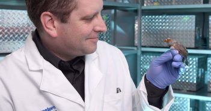
Científicos implantan recuerdos falsos en el cerebro de un pájaro y logran cambiar su tono
La mayoría de los diamante cebra aprenden a cantar imitando las canciones de sus padres. Pero ahora, un equipo de investigadores del suroeste de la Universidad de Texas ha logrado implantar recuerdos...
06/10/2019
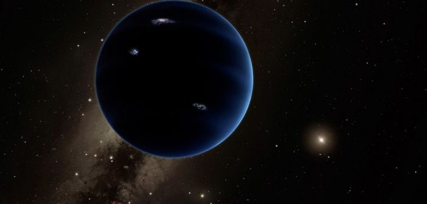
El «Planeta Nueve» en realidad podría ser un agujero negro
Durante casi 5 años, un número creciente de científicos ha atribuido las extrañas órbitas de objetos distantes del sistema solar a los efectos gravitacionales de un «Planeta Nueve» aún no descubierto que se encuentra en el reino helado más allá de Neptuno...
05/10/2019
Los agujeros negros podrían tener núcleos de energía oscura
Una hipótesis de cincuenta años que predice la existencia de cuerpos denominados Objetos Genéricos de Energía Oscura (GEODE) está obteniendo una segunda mirada a la luz de una corrección propuesta a los supuestos que usamos para modelar la forma en que nuestro Universo se expande...
05/10/2019
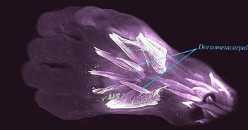
Embriones humanos tienen músculos extra en las manos que también se encuentran en lagartos
Cuando eras solo una gota del tamaño de una uña en el útero de tu madre, tus pequeñas aletas de bebé tenían mucho más en común con las patas de los antiguos reptiles de lo que te podrías imaginar...
02/10/2019
El nivel del mar podría ser un metro más alto para el 2100
En un amplio informe sobre cómo reaccionarán los océanos, los glaciares y las capas de hielo ante un mundo en calentamiento, el Grupo Intergubernamental de Expertos sobre el Cambio Climático (IPCC) mostró las proyecciones futuras sobre cuánto podrían aumentar los mares...
26/09/2019
Una mutación del ADN permite a algunas personas vivir saludablemente con solo 4 horas de sueño
Seguramente habrás escuchado o sabrás de alguna persona que puede funcionar bien con solo unas pocas horas de sueño. Pues no es extraño y tiene una explicación...
31/08/2019
Físicos han construido el motor más pequeño del mundo, y es muy pequeño
Un equipo internacional de físicos ha creado lo que llaman el motor más pequeño del mundo. Todo el motor es un solo ion de calcio, lo que lo hace alrededor de 10 mil millones de veces más pequeño que el motor de un automóvil. El motor experimental fue desarrollado por un equipo internacional dirigido por...
25/08/2019
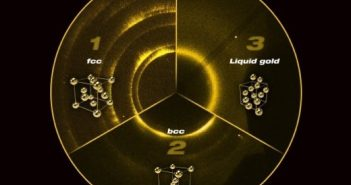
Científicos descubren nueva estructura en el oro que solo existe en estados extremos
Científicos han descubierto que en condiciones extremas, el oro reorganiza sus átomos y forma una estructura previamente desconocida y cuando las presiones son equivalentes a las que hay en el centro de la Tierra...
04/08/2019
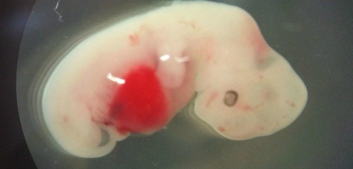
Japón aprueba los primeros experimentos de embriones humano-animal
Un grupo de investigación en Japón recibió la aprobación para avanzar con un experimento que colocará un tipo de células madre humanas (células que pueden crecer en casi cualquier célula) en embriones de otros animales...
03/08/2019
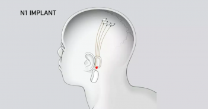
Elon Musk planea la prueba humana de la interfaz cerebro-computadora en el 2020 a través de Neuralink
Elon Musk ha hablado por fin sobre los últimos desarrollos de Neuralink, la startup de neurotecnología que espera crear una interfaz entre humanos y computadoras...
21/07/2019
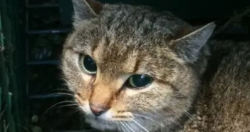
Misterioso ‘gato-zorro’ podría ser una especie recién descubierta, según los investigadores
Un gato de aspecto extraño que vaga por los bosques remotos de la isla francesa de Córcega puede ser una nueva especie, según los informes de noticias locales...
23/06/2019
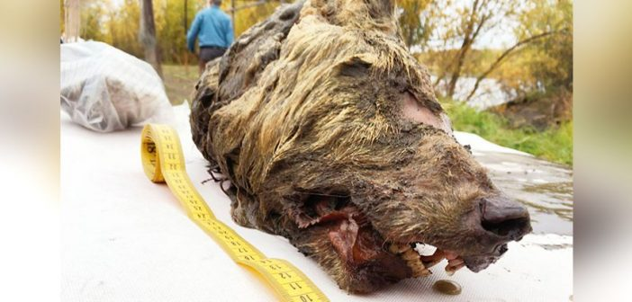
Una cabeza de lobo gigante de hace 40,000 años ha sido encontrada en Siberia
Un hombre local, cerca del río Tirekhtyakh, en el este de Siberia, encontró una gran cabeza de lobo de 40 000 años. Debido a que la cabeza estaba increíblemente bien conservada, el descubrimiento presenta una rara oportunidad para profundizar en la genealogía y evolución de los lobos...
17/06/2019
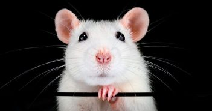
Sentido del olfato en ratones fue recuperado luego de rociar sus narices con células madre
El sentido del olfato de ratones que no lo tenían ha sido restaurado utilizando células madre. El enfoque podría allanar el camino para terapias que funcionen en humanos...
02/06/2019
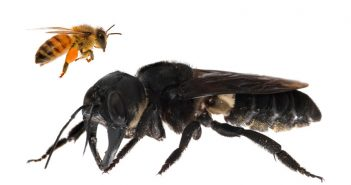
La abeja más grande del mundo ha sido redescubierta después de 38 años
La especie de abeja Megachile Pluto fue descrita por primera vez por el legendario científico Alfred Russel Wallace en 1859. Pero el pequeño insecto, comúnmente llamado abeja gigante de Wallace, había estado desaparecido durante tanto tiempo que los científicos asumieron que estaba extinta...
23/02/2019
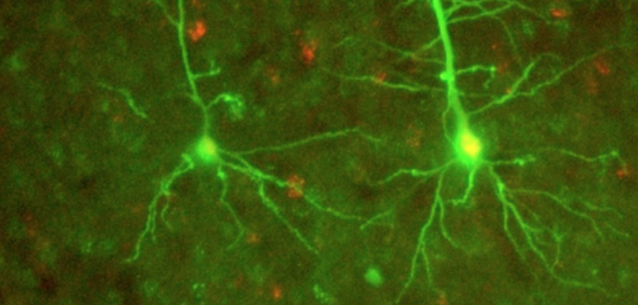
Neurocientíficos podrían haber encontrado una forma completamente nueva de comunicación neuronal
Investigadores de ingeniería biomédica de la Universidad Case Western Reserve dicen haber identificado una forma de comunicación neuronal no identificada previamente, un descubrimiento que podría ayudar a...
23/02/2019
La extinción global de los insectos podría ser peor de lo que pensábamos
La humanidad se dirige hacia una catástrofe a medida que el número de insectos en todo el mundo se desploma y podría desaparecer en su totalidad para el próximo siglo, según un nuevo estudio. La «Disminución mundial de la entomofauna: una revisión de sus conductores» fue escrita por Francisco Sanchez-Bayo en...
11/02/2019